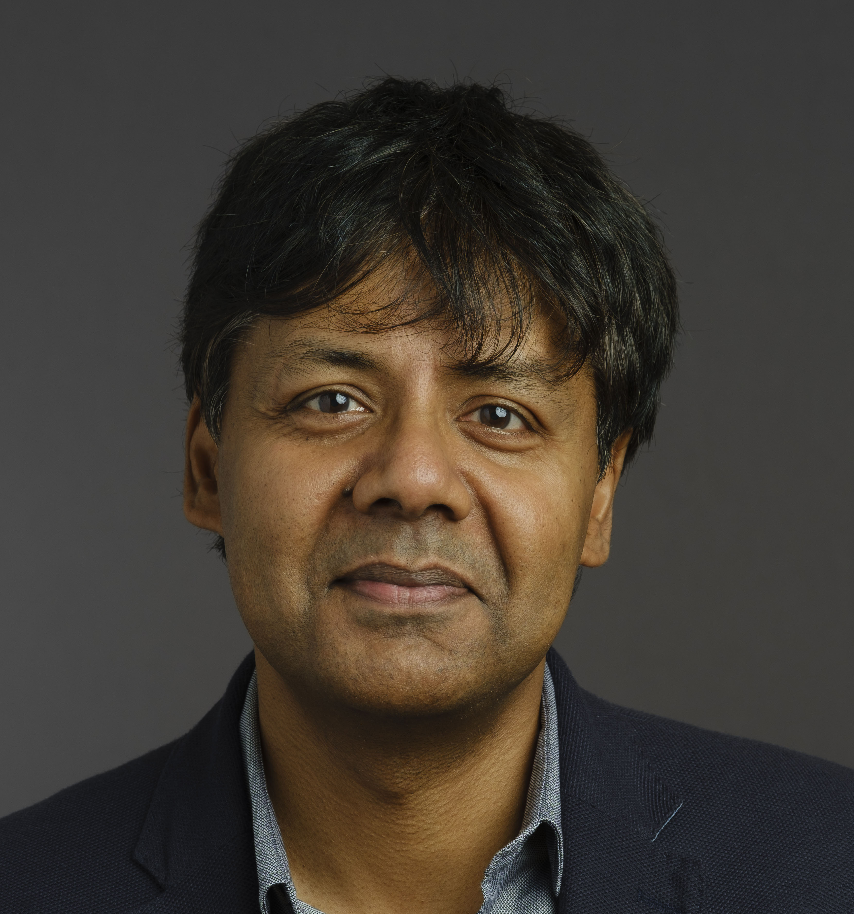
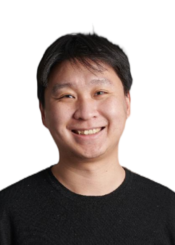
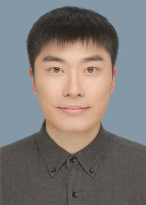

Invited Speakers

Sethu Vijayakumar
Professor of Robotics, University of Edinburgh
Programme Director, The Alan Turing Institute, London
Fellow of the Royal Society of Edinburgh, UK
Talk Title: From Automation to Autonomy: Embodied Generative AI driving the
Future of Work
Abstract:
The use of AI and Robotics in our society is becoming ubiquitous and inevitable across various
walks of life. The new generation of robots work much more closely with humans, other robots and
interact significantly with the environment around it. As a result, the key paradigms are
shifting from isolated decision making systems to one that involves shared control -- with
significant autonomy devolved to the robot platform; and end-users in the loop making only high
level decisions.
This session will introduce powerful machine learning technologies ranging from robust multi-modal sensing, shared representations, scalable real-time learning and adaptation, and compliant actuation that are enabling us to reap the benefits of increased autonomy while still feeling securely in control – with focus on latest algorithmic and hardware developments.
This also raises some fundamental questions: while the robots are ready to share control, what is the optimal trade-off between autonomy and control that we are comfortable with?
Domains where this debate is relevant include deployment of robots in surgical interventions, extreme environments, self-driving cars, asset inspection, repair & maintenance, factories of the future and assisted living technologies including exoskeletons and prosthetics to list a few.
This session will introduce powerful machine learning technologies ranging from robust multi-modal sensing, shared representations, scalable real-time learning and adaptation, and compliant actuation that are enabling us to reap the benefits of increased autonomy while still feeling securely in control – with focus on latest algorithmic and hardware developments.
This also raises some fundamental questions: while the robots are ready to share control, what is the optimal trade-off between autonomy and control that we are comfortable with?
Domains where this debate is relevant include deployment of robots in surgical interventions, extreme environments, self-driving cars, asset inspection, repair & maintenance, factories of the future and assisted living technologies including exoskeletons and prosthetics to list a few.
Sethu Vijayakumar is the Founding Director of the Edinburgh Centre
for Robotics. He pioneered large-scale machine learning for real-time control of iconic robots
such as SARCOS, HONDA ASIMO, KUKA-LWR, and iLIMB. He collaborated with NASA JSC on the Valkyrie
humanoid robot for Mars missions. He holds the RAEng-Microsoft Research Chair at Edinburgh and
is Adjunct Faculty at USC, Los Angeles. He has published 250+ peer-reviewed articles (H-index
50, 13,000+ citations). He is a BBC Robot Wars judge and winner of the 2015 Tam Dalyell Prize
for public science engagement. He helps shape the UK national RAS agenda as Programme Director
(AI) at The Alan Turing Institute.
Group Webpage | LinkedIn
Group Webpage | LinkedIn

Yun Gu
Associate Professor, Institute of Medical Robotics, Shanghai Jiao Tong University
Talk Title: Towards Vision-Guided Endoluminal Surgery: Planning, Sensing and
Navigation
Abstract:
Endobronchial intervention is increasingly used as a minimally invasive means for the treatment
of pulmonary diseases. This process requires accurate pre-operative diagnosis, planning, and
intra-operative guidance for precise treatment. In this talk, we will present our recent works
on pulmonary anatomical analysis and surgical navigation driven by clinical-friendly priors.
Yun Gu is an associate professor in Institute of Medical Robotics, Shanghai
Jiao Tong University. He is also affiliated to the Institute of Image Processing and Pattern
Recognition under the Department of Automation, Shanghai Jiao Tong University. His research
interests are in the fields of Computer-Assisted Surgery and Medical Image Computing. He
published over 60 refereed journal articles and conference proceedings papers. He was a
recipient of the Best Bench-to-Bedside Award in IPCAI 2022 and Machine Learning for CAI Best
Paper honorable mention in IPCAI 2023.
Email: yungu@ieee.org
Email: yungu@ieee.org

Chongjing Cao
Associate Research Fellow, Shenzhen Institutes of Advanced Technology, Chinese Academy of Sciences
Talk Title: Electrostatic soft actuators for emerging biomedical and
human-machine interaction applications
Abstract:
The field of soft robotics integrates robotics, biology, and material sciences to develop the
next generation of robots that are better suited to complex uncertain environments and
human-centered operations with strict safety requirements. As a core component of soft robots,
soft actuators have remained a consistent research focus, among which an emerging class of
electrostatic soft actuators stands out for their exceptional energy and power densities, as
well as high electromechanical efficiencies. This talk will first introduce the fundamental
concepts, working principles, and state-of-the-art advancements in electrostatically driven soft
actuators. Research progress on the design and modeling of the electrostatic soft actuators in
our lab over the last five years will be reported. Finally, the talk will present our efforts in
deploying these actuators for emerging biomedical applications (e.g. a soft crawling capsule
robot for endoscopies) and human-machine interaction applications (e.g. a multimodal fingertip
wearable device for immersive virtual reality).
Chongjing Cao received his Ph.D. degree in robotics from University of
Bristol in 2019. In 2020, he joined Shenzhen Institutes of Advanced Technology (SIAT), Chinese
Academy of Sciences, where he currently serves as an Associate Research Fellow in the Department
of Biomedical and Health Engineering. His research focuses on developing novel soft actuation
technologies for biomedical and wearable device applications, with a specific emphasis on the
nonlinear dynamics and modeling of electrostatic soft actuation systems. He has authored over 50
papers in peer-reviewed journals and conferences and received research funding from several
agencies including the National Natural Science Foundation of China, Guangdong Basic and Applied
Basic Research Foundation, Chinese Academy of Sciences, etc.

Hao Dong
Assistant Professor, Center on Frontier Computing Studies, School of Computer Science, Peking University
Talk Title: Trends on Embodied Intelligence
Abstract:
Embodied intelligence enables intelligent agents to act autonomously in the physical
environment. Large-scale automated simulation optimizes robots' perception, decision-making, and
manipulation abilities by creating virtual environments to simulate complex scenarios and tasks.
In the future, simulation technology will become more efficient, but it still needs to be
combined with real-world data to handle more larger-scale and complex tasks.
Hao Dong is an Assistant Professor at the Center on Frontier Computing
Studies, School of Computer Science, Peking University. Since joining in 2019, he has led the
PKU-Agibot Lab, focusing on object manipulation, task planning, and embodied navigation, with
the aim of developing general embodied intelligence algorithms and systems.
He has published over 70 papers in top-tier conferences and journals, including RSS, ICRA, CoRL, IROS, NeurIPS, ICLR, CVPR, and ICCV, with more than 8,000 citations on Google Scholar. Hao has received several international accolades, such as the IROS 2024 Best Application Paper Finalist, ByteDance Best Mentor Award 2024, Champion of the NeurIPS 2022 MyoChallenge for dual-object manipulation, and the ACM MM 2017 Best Open Source Software Award.
He has served as an Area Chair and Associate Editor for leading conferences and journals such as NeurIPS, CVPR, AAAI, ICRA, and Machine Intelligence Research, where he received the Outstanding Associate Editor Award. He has led a National Key Project on Next-Generation Artificial Intelligence.
He has published over 70 papers in top-tier conferences and journals, including RSS, ICRA, CoRL, IROS, NeurIPS, ICLR, CVPR, and ICCV, with more than 8,000 citations on Google Scholar. Hao has received several international accolades, such as the IROS 2024 Best Application Paper Finalist, ByteDance Best Mentor Award 2024, Champion of the NeurIPS 2022 MyoChallenge for dual-object manipulation, and the ACM MM 2017 Best Open Source Software Award.
He has served as an Area Chair and Associate Editor for leading conferences and journals such as NeurIPS, CVPR, AAAI, ICRA, and Machine Intelligence Research, where he received the Outstanding Associate Editor Award. He has led a National Key Project on Next-Generation Artificial Intelligence.

Shanghang Zhang
Professor, Peking University
Talk Title: TBA
Abstract:
Long-term research in artificial intelligence and robotics. Details to be
announced.
Shanghang Zhang, Professor at Peking University, long-term research in AI
and robotics.